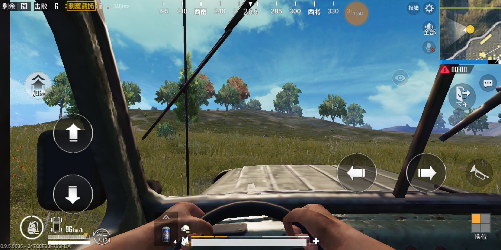

BATTLEGROUND MOBILE INDIA
Battlegrounds Mobile India (BGMI) is an immensely popular battle royale game developed by Krafton. It serves as the Indian version of the global hit game PlayerUnknown's Battlegrounds (PUBG) and offers an exciting multiplayer experience on mobile devices.
In BGMI, players are dropped onto a virtual battlefield where they must scavenge for weapons, equipment, and resources while battling against other players. The objective is to be the last person or team standing, making it a thrilling test of survival and strategic gameplay.
BGMI boasts impressive graphics and smooth gameplay, optimized specifically for mobile devices, ensuring an immersive and visually stunning experience. It features various maps, including familiar ones from the PUBG universe, each with its own unique terrain and challenges.
Types of players in BGMI:
- Rushers
- Snipers
- Drivers
- Medics
1.Rushers

Rushing in Battlegrounds Mobile India (BGMI) is a high-risk, high-reward strategy that involves aggressive and fast-paced gameplay. It is a tactic commonly employed by skilled players aiming to dominate the battlefield and take out opponents swiftly.
When rushing in BGMI, players prioritize speed and close-quarters combat. They quickly loot weapons, ammunition, and protective gear, focusing on essentials rather than extensive looting. The goal is to engage enemies as soon as possible, catching them off guard and eliminating them before they can react.
Rushers utilize their knowledge of the map, strategic positioning, and quick reflexes to engage in intense firefights. They may employ flanking maneuvers, utilizing cover and terrain to surprise enemies from unexpected angles. Communication and coordination within a squad are crucial for successful rushing, as teammates can coordinate attacks and provide support.

However, rushing comes with inherent risks. Players must be mindful of their surroundings, as they are more susceptible to ambushes and traps. It requires skillful decision-making, split-second reactions, and a solid understanding of the game's mechanics.
Ultimately, rushing in BGMI can lead to exhilarating victories, but it also demands a level of skill and experience. It is a dynamic and aggressive playstyle that adds an extra layer of excitement and intensity to the battle royale experience
2.Sniping

Sniping in Battlegrounds Mobile India (BGMI) is a strategic and patient approach to combat, favored by players who excel in long-range precision shooting. Snipers in BGMI typically choose vantage points with clear lines of sight, allowing them to scout, engage, and eliminate enemies from a safe distance.
A skilled sniper carefully selects their weapons, often opting for high-powered rifles equipped with scopes for enhanced accuracy. They prioritize finding the right balance between stealth and visibility, remaining hidden while observing their surroundings for potential targets.
Snipers in BGMI rely on patience and timing, waiting for the opportune moment to take the perfect shot. They may scan the environment for enemy movements, analyzing patterns and predicting their opponents' actions.
Accuracy and precision are key for snipers, as they aim for critical headshots to ensure swift eliminations. They also need to be mindful of bullet drop and travel time, adjusting their aim accordingly for long-distance shots.
While sniping provides a tactical advantage, it also requires caution, as the sniper's location may become compromised if not adequately protected. Additionally, sniper rifles are less effective in close-quarters combat, necessitating a secondary weapon for self-defense.
Mastering the art of sniping in BGMI demands skill, patience, and strategic positioning, rewarding players with satisfying long-range eliminations and the ability to control engagements from a distance.
3.Drivers

Drivers in Battlegrounds Mobile India (BGMI) play a crucial role in squad-based gameplay, focusing on vehicular transportation and navigation. Skilled drivers possess a deep understanding of the map, using it to their advantage for quick rotations and strategic positioning. They excel in operating vehicles efficiently, allowing their squad to traverse the expansive battleground swiftly. Drivers must maintain awareness of their surroundings, avoiding obstacles and enemy fire while ensuring the safety of their teammates. Effective communication with the squad is vital, as drivers coordinate pick-ups, drop-offs, and provide crucial support during intense firefights. Their proficiency in maneuvering vehicles can be a game-changer, enabling strategic mobility and aiding their squad's success in BGMI.
4.Medics

Medics in Battlegrounds Mobile India (BGMI) play a crucial role in team-based gameplay, providing vital support and healing capabilities to their squadmates. As a medic, players can revive fallen teammates and restore their health, ensuring the squad's longevity on the battlefield. They carry medical supplies and can efficiently heal themselves and others during intense firefights. Medics often prioritize staying near injured teammates, ready to provide immediate aid and ensure the team's survivability. Their presence adds a valuable dynamic to squad tactics, as they balance combat skills with the responsibility of keeping their team in fighting shape.